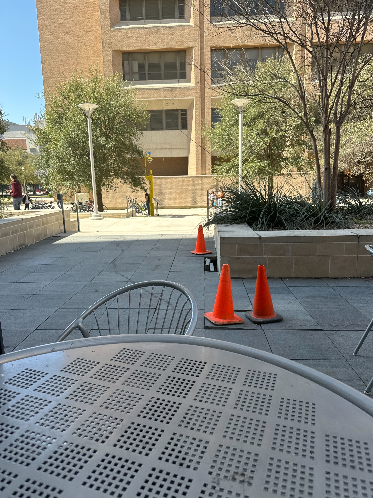

<!DOCTYPE html>

<html lang="en">

<head>
   <title>LT2 Sample Slider</title>
   <meta charset="UTF-8">
   <meta name="description" content="One slider trial that displays a response">
   <meta name="author" content="Catherine Liu">
   <script src="jatos.js"></script>
   <script src="https://unpkg.com/jspsych@7.3.4"></script>
   <script src="https://unpkg.com/@jspsych/plugin-html-keyboard-response@1.1.3"></script>
   <script src="https://unpkg.com/@jspsych/plugin-image-keyboard-response@1.1.3"></script>
   <script src="https://unpkg.com/@jspsych/plugin-html-button-response@1.1.3"></script>
   <script src="https://unpkg.com/@jspsych/plugin-image-slider-response@1.1.3"></script>
   <script src="https://unpkg.com/@jspsych/plugin-image-button-response@1.1.3"></script>
   <script src="https://unpkg.com/@jspsych/plugin-preload@1.1.3"></script>
   <link href="https://unpkg.com/jspsych@7.3.4/css/jspsych.css" rel="stylesheet" type="text/css" />
</head> 

<body>

<script>
   /** initializes jsPsych, gives an option for user to cancel participation, and collects the data at the end */
   var jsPsych = initJsPsych({
      on_trial_start: jatos.addAbortButton,
      on_finish: function() {
         jsPsych.data.displayData();
         jatos.endStudy(jsPsych.data.get().json());
      }
   });

   var timeline = [];

   /** preloads images that will be used in experiment */
   var preload = {
      type: jsPsychPreload,
      images: ['img/cones_shaan.jpg']
   };
   timeline.push(preload)

   /** Welcome page - requires user to press space to start */
   var welcome = {
      type: jsPsychHtmlKeyboardResponse,
      stimulus: "Welcome to the experiment. Press space to begin.",
      choices: [" "]
   }
   timeline.push(welcome)  

   /** Display instructions - requires user to press space to continue 
    * this is an example for non-specific goal */
   var instructions = {
      type: jsPsychHtmlKeyboardResponse,
      choices: [" "],
      stimulus: `
    <p>In this experiment, you will be shown a picture with two orange cones.</p>
    <p>Your goal is to estimate the distance between the two cones<br>and get as close to the real distance as possible.</p>
    <p>You will indicate your answer on a slider with a range of distances.</p>
    <p><strong>Press space to begin.</strong></p>
    `,
    post_trial_gap: 500
   };
   timeline.push(instructions)

   /** first trial displaying image and slider and submit button
    * however, we need to create our own plugin that allows for us
    * to display the number user is choosing before submitting, 
    * get the slider from this trial to the result page, 
    * and display the guess and correct answer onto the slider
    * on the result page */
   var trial = {
      type: jsPsychImageSliderResponse,
      stimulus: `img/cones_shaan.jpg`,
      stimulus_height: 400,
      prompt: 'How far apart are the two cones?',
      labels: ['2 inches', '6 inches'],
      min: 200,
      max: 600,
      slider_start: 400,
      button_label: 'Submit', 
   }
   timeline.push(trial)

   /** Displays results - 
    * Tells user their guess and the 'correct' response, which for this trial
    * is around 20% higher than their guess (unless that would put them over 
    * max distance, then it's 20% lower) */
   var displayResponse = {
      type: jsPsychHtmlKeyboardResponse,
      stimulus: function() 
      {
         var answer = jsPsych.data.getLastTrialData().select("response").values[0];
         var difference = 80 + 10 * Math.random()
         var correct_answer = difference + answer
         if (correct_answer > 600) {
            correct_answer = answer - difference
         }

         answer = answer / 100
         correct_answer = (correct_answer / 100).toFixed(2)
         var percentage = (difference / 400 * 100).toFixed(2)

         console.log(answer)

         return `<div style='float: left;'></img>
      <p>You guessed ${answer} inches.</p>
      <p>The correct answer is ${correct_answer} inches.
      <p>You were within ${percentage}% from the correct answer.`
      },
      stimulus_height: 400,
      choices: [" "]
   }
   timeline.push(displayResponse)

   /** runs the experiment with JATOS */ 
   jatos.onLoad(() => {
      jsPsych.run(timeline)
   })
</script>

</body>
</html>